| Version 6.0.3 |
This chapter describes how procedures for each UI component can be created automatically by QF-Test. The advantage of this approach is that you do not need to record each step of your tests manually. Furthermore you will also get a standardized structure of 'Packages' and 'Procedures' for testing all dialogs of your SUT.
You can find the following examples in the file
qftest-6.0.3/doc/tutorial/advanced-demos/en/automated_procedures.qft
. There is also a second test-suite
qftest-6.0.3/doc/tutorial/advanced-demos/en/automated_procedures_work.qft
to perform your own implementations. Please take care to copy all test-suites to a project-related folder first and modify them there.
If we want to create tests for all features of the JCarConfigurator, we have to record steps on each element that will be touched by a test. The JCarConfigurator is a small application with five dialogs and perhaps approximately thirty graphical elements. So creating all important test-cases for this application can be achieved within one or two days. But imagine a big project like an ERP system with about fifty dialogs and hundreds of elements. Creating test-cases for such a huge system will definitely take longer and also the maintenance of recorded tests could become quite difficult.
As first organizational step we recommend to record each test step as a 'Procedure' and call it from the 'Test-cases' requiring it. If you organize your tests in different test-suites, you could split those test-suites into two levels. The first level contains only UI component related procedures and the second level contains only test-cases calling procedures of level one.
The approach of implementing each test step as procedure brings us to a situation where we could split the work into two parts:
QF-Test brings a feature which creates that basic procedures for each UI component automatically. The usage of this feature should drastically minimize the time for creating test-suites and test-cases and supports you in making easier maintainable test-suites.
You can find a demo suite containing some test-cases created by this
qftest-6.0.3/doc/tutorial/advanced-demos/en/automated_procedures.qft
.
|
| 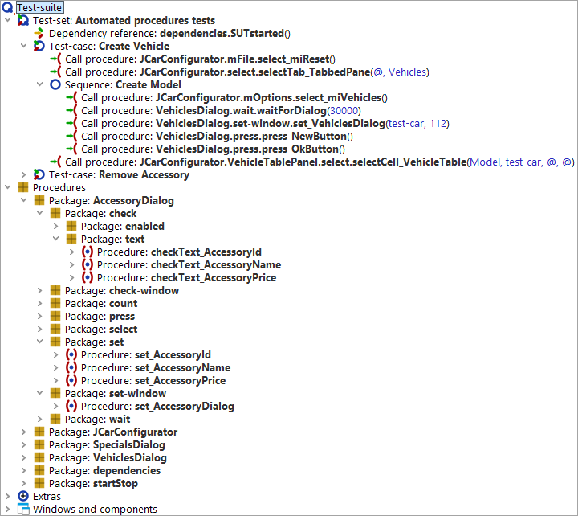 | ||
|
| Figure 30.1: Screenshot of test-suite | ||
The following sections demonstrate how to create those procedures and organize your test-cases.
Please copy the demo test-suite
qftest-6.0.3/doc/tutorial/advanced-demos/en/automated_procedures_work.qft
to a project-related folder and open it there.
This test-suite contains a 'Test-set' referring to a 'Start SUT' 'Dependency'.
|
| |||
|
| Figure 30.2: The test-suite automated_procedures_work.qft | ||
First we have to launch the SUT via selecting the 'Dependency reference' and pressing 'Start test run'.
Once the SUT is up and running we are ready to record the test steps. Normally we would press the 'Start recording' button, then record the according test steps and then press 'Stop recording'. After that we would re-organize the recorded steps, i.e. generating procedures and parametrizing them. Exactly those steps can be performed automatically now.
Let us generate the basic procedures for the main window first. Before we can start, please modify the settings of QF-Test.
Open the QF-Test options via »Edit«-»Options«. Then switch to 'Record'
-> 'Procedures'. Please change the value for the 'Configuration file
for recorded procedures' to
the full path of the demo configuration test-suite at
qftest-6.0.3/demo/procbuilder/carconfig-procbuilderdef.qft.
Then close the 'Options' via pressing 'OK'.
You will see more details about that file in the following chapters.
After altering the settings proceed with following steps:
Now QF-Test creates the basic procedures of the main window. You should see
a new 'Package' called procbuilder under 'Procedures' of your test-suite.
This package contains several packages and procedures for actions on the
whole dialog and its single UI components.
Note The current configuration created a 'Package'
JCarConfigurator under the procbuilder
'Package'. This 'Package' is
indicated to be the container for all actions performed on
the main window.
|
| 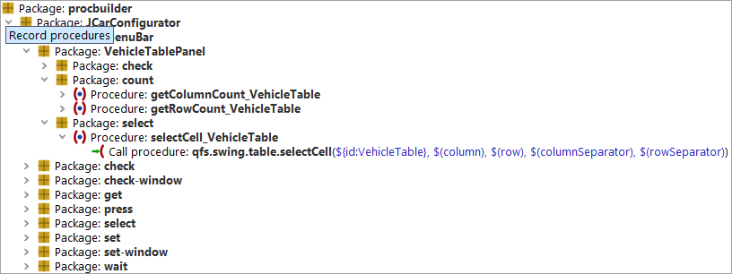 | ||
|
| Figure 30.3: The recorded procedures | ||
Please note that the involved components have also been recorded in 'Windows and components'.
The next step is to check which procedures are useful for us and which are obsolete.
Let us take a closer look at the created 'Packages':
|
|
|
||||||
|
| Table 30.1: | ||||||
The 'Package' JCarConfigurator contains several packages which are:
|
|
|
||||||||||||||||||||||
|
| Table 30.2: | ||||||||||||||||||||||
In our case all procedures might be useful. So we
can move the whole 'JCarConfigurator' 'Package' from the
procbuilder 'Package' directly under the 'Procedures'
node. Press 'Yes' on the occurring 'Update Reference' dialog.
Now the procedures can be used by test-cases or other procedures.
Finally our test-suite should look like this:
|
| 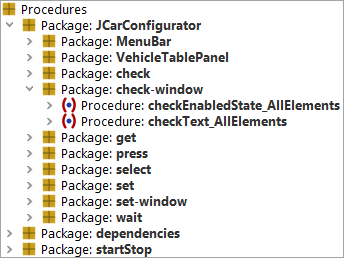 | ||
|
| Figure 30.4: The test-suite containing the procedures | ||
Repeat that recording now for the 'Specials' and the 'Accessories' panel and just move the respective procedures or packages for the important components to the 'JCarConfigurator' package. In our case these are only the packages 'SpecialsPanel' and 'AccessoryTablePanel'.
The full test-suite should then look like this:
|
| 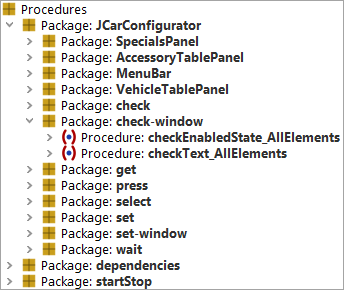 | ||
|
| Figure 30.5: The procedures for all panels | ||
We are ready for creating test-cases using the automatically recorded test steps. You could of course also repeat that recording for all other dialogs, e.g. the 'Vehicles' dialog which can be reached via the menu 'Options' -> 'Vehicles' as well as for the 'Accessories' and 'Specials' dialogs.
You do not need to record the whole window all the time. You could also select 'Component only' to record one dedicated component or 'Component with children' to record procedures for a certain panel.
In the previous example we used the file
qftest-6.0.3/demo/procbuilder/carconfig-procbuilderdef.qft
as configuration file for the automated
creation. In this section we want to take a closer look at the
configuration capabilities of QF-Test. So please open that file.
|
| 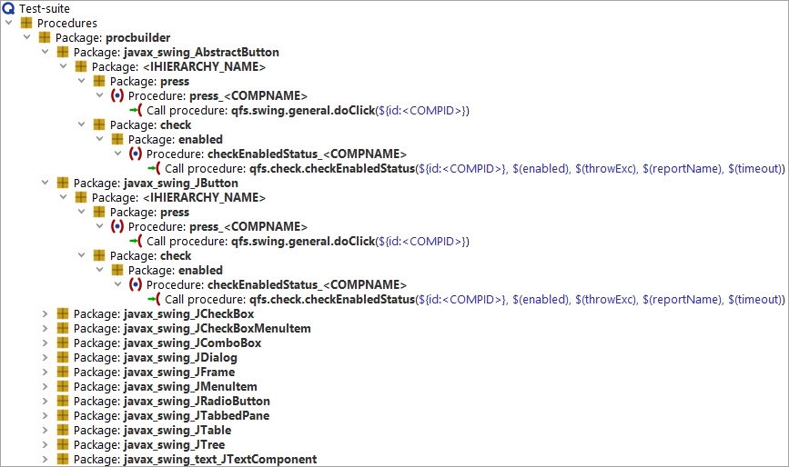 | ||
|
| Figure 30.6: The current configuration | ||
The package procbuilder is the root-package for all created
packages. If you want to use another name for the automatically
created procedures, feel free to rename the package.
If you open that package, you can see the 'class' level. This level describes the classes of the UI components which should be taken into account for creating the packages. The next levels contains information about the created package structure and procedures. You can find a detailed description of those capabilities in the manual in chapter The Procbuilder definition file.
In our first example we want to create a new settings file which we will build up step by step.
Please perform following actions at the beginning:
The new test-suite should look like this:
|
| 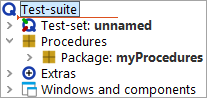 | ||
|
| Figure 30.7: The own configuration file | ||
Now we are ready to configure procedure templates for specific classes. Let us create procedures for the text-fields on the main panel of the JCarConfigurator first. It might be interesting for our project to check the content of those text-fields, so we need to create procedures for checking the text of each text-field.
To create those procedures we have to insert a new package to the package 'myProcedures'. Please call that package 'javax_swing_JTextField'. 'javax.swing.JTextField' is the class of those text-fields, but we have to use '_' in the package's name, because '.' is not allowed in that attribute. This package will instruct QF-Test to create the procedures in it, if it meets a component of the class 'javax.swing.JTextField' only. That is an important aspect, because we should realize that procedure templates can be created per classes of components.
Consecutively we want to create a template for a procedure checking the text
of a component. The template procedure has to be part of another
package. The name of this package should indicate its purpose, e.g. 'checkers'.
After creating the 'checkers' package you can add a procedure 'checkText' to
it.
The procedure should contain a 'Check Text' node which is meant
to check the text of components. Please insert such a 'Check text'
node via right mouse click at the expanded procedure and »Insert node«-»Check nodes«-»Check Text«. Specify $(client) as client,
'dummy' as QF-Test component ID and $(text) as text.
Of course, after confirming these entries, we will get a warning that a component named 'dummy' does not exist. In this case we are allowed to ignore this warning.
The test-suite will then look like this:
|
| 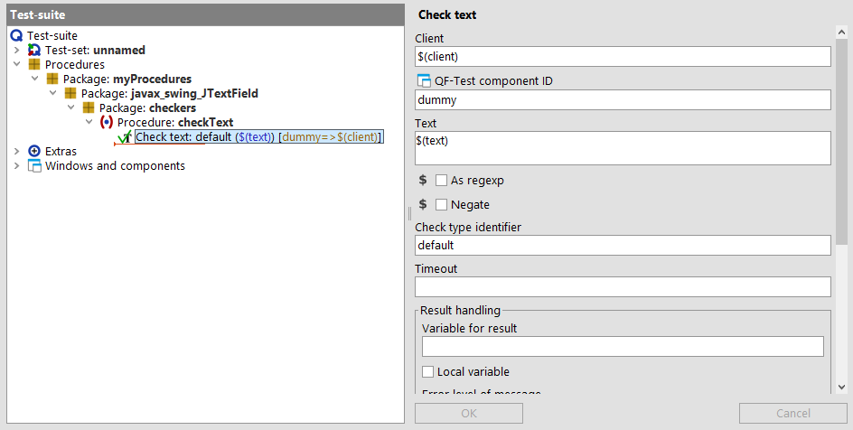 | ||
|
| Figure 30.8: The checkText procedure | ||
The procedure contains an empty default value for the parameter 'text'.
|
| 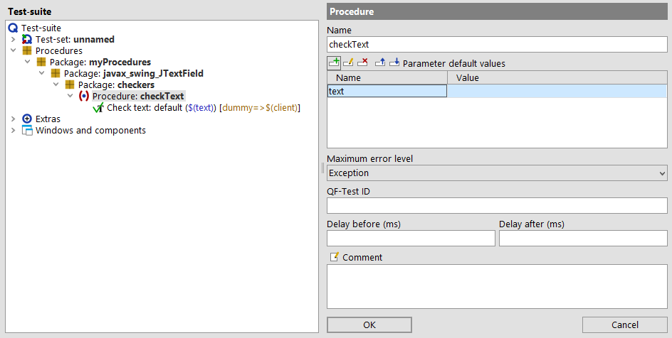 | ||
|
| Figure 30.9: The checkText procedure with parameters | ||
Now we have nearly completed our first procedure template, but we have to think
about one more issue. Each component has its specific and unique
'QF-Test ID', so it
would be great to use that 'QF-Test ID' attribute immediately during
creation, otherwise we have to do that manually afterwards. We also want the
procedure to have a component-related name instead of 'checkText'
only. The place holder <COMPID> points out to QF-Test
to replace it with the QF-Test ID of the current component.
So we have to change the procedure name to
checkText_<COMPID> and we have to insert the <COMPID>
place holder directly in the 'QF-Test component ID' attribute of the 'Check text' node.
Finally the template procedure should look like this:
|
| 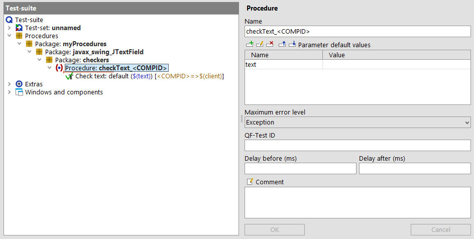 | ||
|
| Figure 30.10: Using the <COMPID> place holder | ||
We are ready to begin now. First we have to order QF-Test to use that file. That is achieved via the options of QF-Test. Open the options dialog via »Edit«-»Options« and change to 'Record' -> 'Procedures.' Specify the path of your 'mySettings.qft' for the 'Configuration file for recorded procedures' and press 'OK'.
Then start the JCarConfigurator again. Once it is up and running, please proceed with following steps:
Congratulations, you have instructed QF-Test to record test steps for you.
|
| 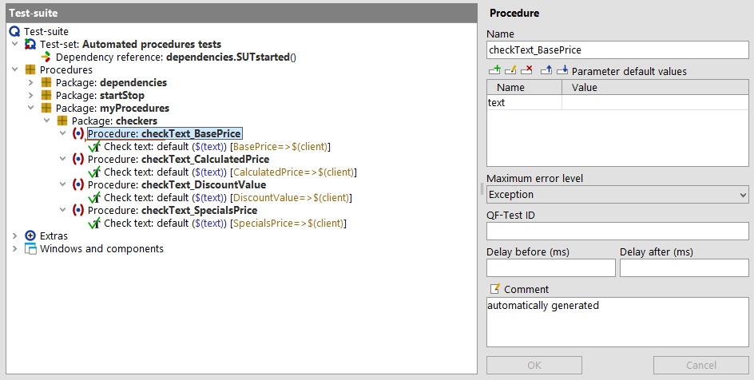 | ||
|
| Figure 30.11: Your first automatically created procedures | ||
The 'checkText' procedures have a parameter 'text' for the text to check.
Up to now we have to specify that
value each time we call that 'Procedure' of the according
text-field. Let us assume we have a scenario where we intend to check
the default values of the JCarConfigurator after its startup. In
this case we would have to add the single procedure calls of all
four 'checkText' procedures and specify the according
values. However, QF-Test
offers a place holder to set the current value of a text-field
automatically to the created procedures. Therefore we have to change
the default-value of the 'text' parameter to
<CURRENTVALUE> in our configuration test-suite. After that you have to ensure that the
myProcedures package doesn't exist under the
'Procedures' node anymore, then re-create
the packages like in the previous example. Otherwise QF-Test will
create a package myProcedures1 to ensure that each
creation process has its own unique target package.
The configuration file looks like this:
|
| |||
|
| Figure 30.12: The configuration for the current text | ||
The newly created procedures displays like below:
|
| 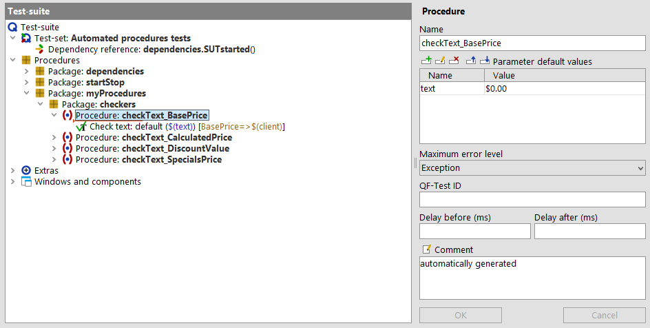 | ||
|
| Figure 30.13: The created procedures with the current text | ||
In the previous example we have created the 'checkText' procedure for checking single text-fields. Now you should be able to create a 'set' procedure for setting the text of a text-field or a 'press' procedure for pressing a button. Those procedures are created similarly. Keep in mind that all those procedures work with one single component.
In some test scenarios it might be interesting to call one procedure for checking all components of a specific dialog or specific panel or to fill all visible text-fields. Because such procedures deal with components which act as containers, we call those procedures 'container'-procedures.
In our case we could consider one procedure calling all single 'checkText' procedures of the JCarConfigurator. But how to create such a procedure like that?
First of all add a new 'class'-package to your 'mySettings.qft'
file with the name 'javax_swing_JFrame'. The main window of the JCarConfigurator is an
instance of javax.swing.JFrame, that is why we have to
use that specific package name. The 'class'-package has to contain a
'type'-package which we call 'checkers-window' now. The 'type'-package has to contain a
procedure checkTextOfElements_<COMPID>, intended to perform the actual checks. We use the
<COMPID> placeholder again for the procedure name to
determine which dialog is affected by the created procedures.
The next step is to specify the procedure content. Let us see how we can configure this.
We have four text-fields which can be checked by using the same procedure
checkText_<COMPID>. QF-Test allows to call all
four procedures with just one configured 'Procedure call' node.
Therefore insert a 'Procedure call' for the procedure
javax_swing_JTextField.checkers.checkText_<CCOMPID>.
The configuration file should look like below:
|
| 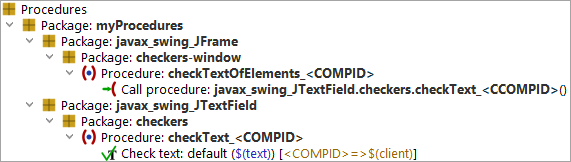 | ||
|
| Figure 30.14: The template for container procedures | ||
The last step is to make QF-Test to create a 'container' procedure and
not a normal 'component' procedure. This can be achieved by setting
@FORCHILDREN in the comment attribute of the
checkTextOfElements_<COMPID> procedure.
|
| 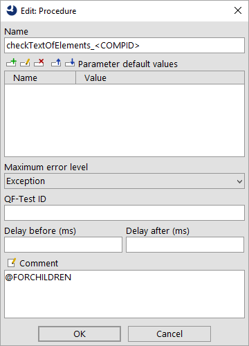 | ||
|
| Figure 30.15: Usage of @FORCHILDREN tag | ||
Now you can record the procedures like in the previous examples. Do not forget to remove the 'myProcedures' from 'Procedures' before. You should then get something like this under 'Procedures':
|
| 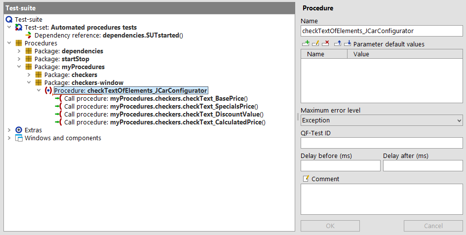 | ||
|
| Figure 30.16: The created container procedures | ||
Note QF-Test replaces the 'class' part of the procedure-calls by the top package of the configuration. In our case this is 'myProcedures'.
We could meet a similar situation like in the example Using the current text for checking, where we want to record the current values of
each text-field during creation. In the example Using the current text for checking we used
<CURRENTVALUE>. Now we have to specify the current
text as parameter at the procedure-call in the 'container'-procedure
'checkTextElements'. Therefore we add the parameter 'text' to
the procedure-call in your 'mySettings.qft' file and the value should
be <CCURRENTVALUE>.
|
| 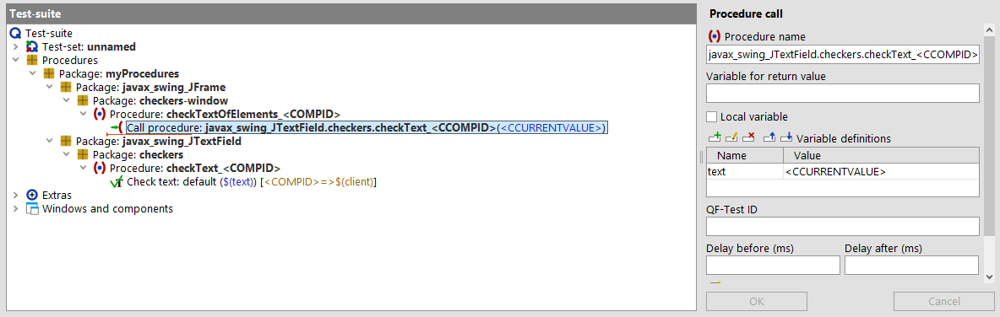 | ||
|
| Figure 30.17: Configuration of <CCURRENTVALUE> | ||
If you create the procedures again, you will see the current values at the procedure-calls. Please do not forget to remove the 'myProcedures' package from 'Procedures'.
|
| 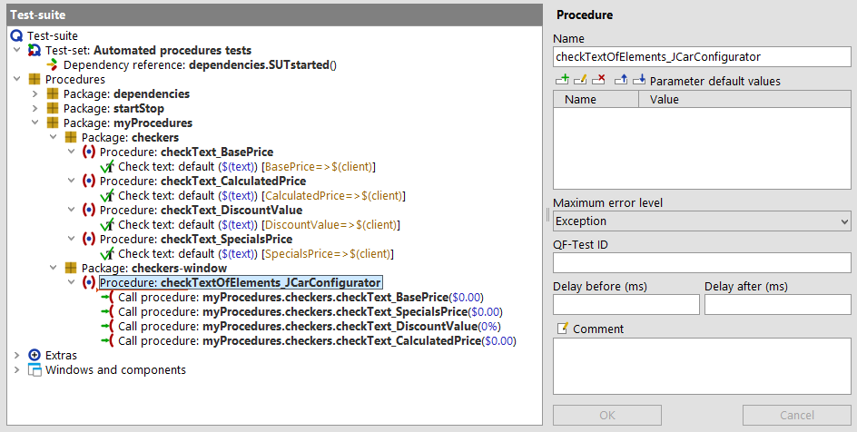 | ||
|
| Figure 30.18: Test-suite using <CCURRENTVALUE> | ||
If you take a closer look at the created procedure 'checkTextElements_', you will see
that each procedure-call gets the parameter text. Perhaps it might
be convenient for test development to set the according 'text'
parameters as default values for the 'container'-procedure.
To achieve this you have to add one more parameter to the
procedure call in the settings file. The name of the parameter has to
be <CCOMPID> and the value will be
<CCURRENTVALUE>. Then you have to change the value of the
text parameter of that procedure-call to $(<CCOMPID>).
The configuration should look like this now:
|
| 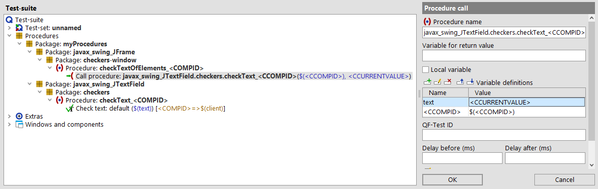 | ||
|
| Figure 30.19: Parameters for container procedures | ||
If you create the procedures again, you will see that the 'checkTextElements' procedure has four more parameters with the current value of the elements as default values. Additionally each single procedure call uses a variable - named after the component-id - as 'text' parameter.
|
|  |
||
|
| Figure 30.20: Parameters for container procedures in test-suite | ||
As you have seen in the previous sections there is a lot of configuration capability for the automated creation of basic procedures. But there are even more options available. Please take a look at the manual chapter The Procbuilder definition file.
| Last update: 9/6/2022 Copyright © 2002-2022 Quality First Software GmbH |